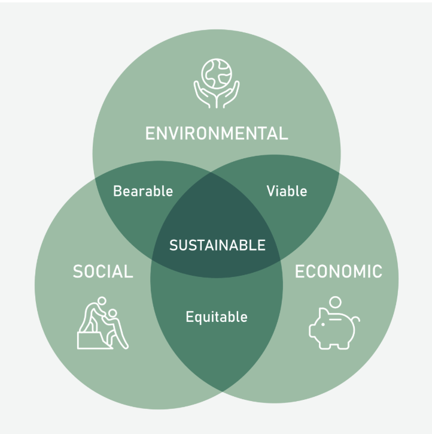
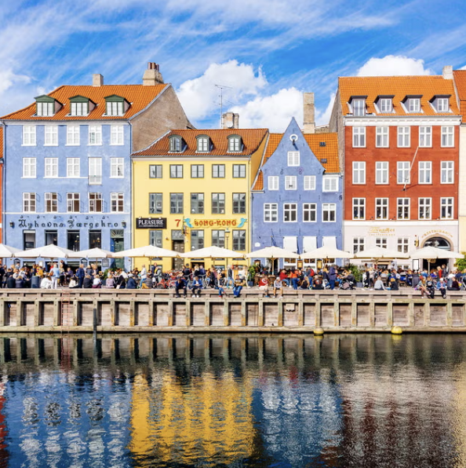

Our team explored the connection between visual art and music by developing a neural network to predict an album’s genre based solely on its cover art. Using a dataset of 20,000 album covers across 20 genres, we applied transfer learning with DenseNet121 to classify covers into genres like rock, hip-hop, jazz, and metal.
| Project | Image | Description |
|---|---|---|
| Sustainability Class Report |  | For my Sustainability by Design class, I explored key challenges such as climate change, resource depletion, and waste management. I examined solutions like renewable energy, sustainable consumption, and policy initiatives that promote long-term environmental and social well-being. |
| AI Science Fiction Story | For my science fiction class, I created a story about AI. I explored themes of power, identity, and autonomy, imagining a future where AI humans and real humans struggle for control. | |
| Travel Writing Story |  | For my travel writing class, I wrote a story about my travels in Copenhagen, where I met locals and explored Danish traditions. From experiencing hygge culture to discovering unique customs, my journey offered insights into Denmark’s way of life. |